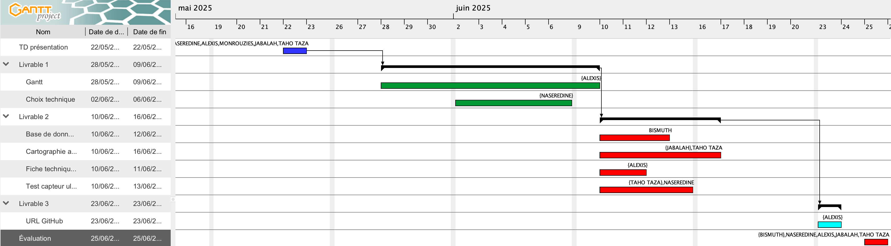

SAÉ24 – Localisation d’un objet sonore
Contexte
La SAÉ24 est un exercice qui permet de développer des compétences en réseaux, télécommunications, systèmes numériques, développement et gestion de projet.
Objectif du projet
L’objectif principal est de permettre à une personne de localiser un objet sonore dans une salle de 8×8 mètres à l’aide de trois microphones. Le projet consiste à :
- Exploiter un signal sonore émis par un objet et reçu par trois microphones disposés dans une pièce.
- Estimer la position de l’objet (coordonnées x, y) à partir de l’amplitude sonore mesurée par chaque capteur.
- Afficher la position estimée de l’objet sur une interface web dédiée, mise à jour en temps réel.
Déroulement
- Analyse et modélisation de l’architecture complète du système (réseaux, télécoms, logiciel).
- Développement d’un simulateur du déplacement de l’objet et calcul de sa position par trilatération.
- Configuration de scénarios de déplacement et visualisation en temps réel sur la cartographie web.
- Gestion de projet collaborative avec utilisation de Git et GitHub.
Voici le gantt utilisé pour le projet :

Compétences développées
- Maîtrise des bases de l’électricité, des systèmes numériques et de la mesure de signaux.
- Déploiement et configuration d’un réseau local, d’un serveur MQTT et d’une base de données MySQL.
- Développement d’algorithmes de traitement du signal et d’interface web interactive.
- Gestion de projet, communication et organisation du travail en équipe.